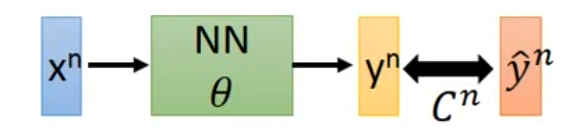
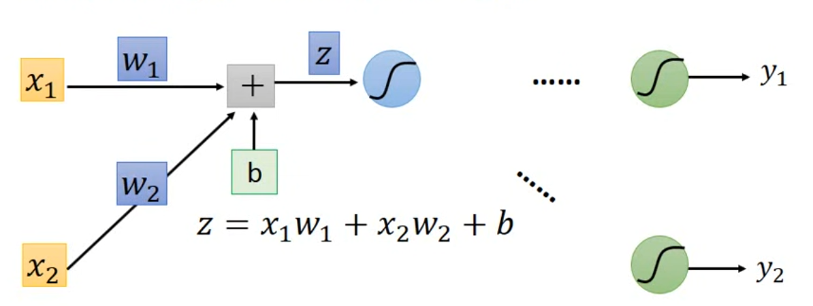
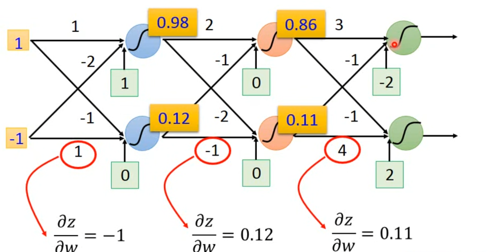
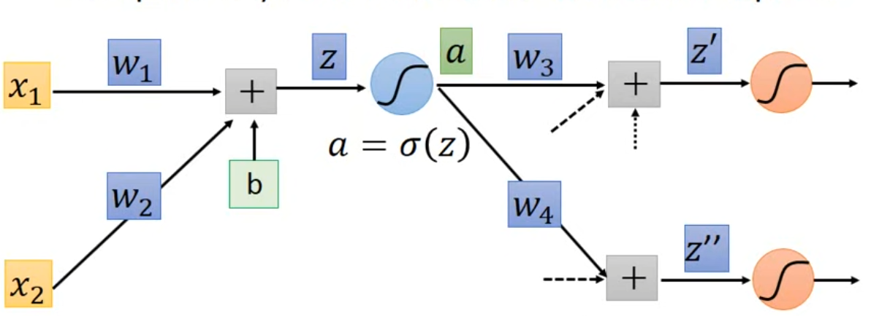
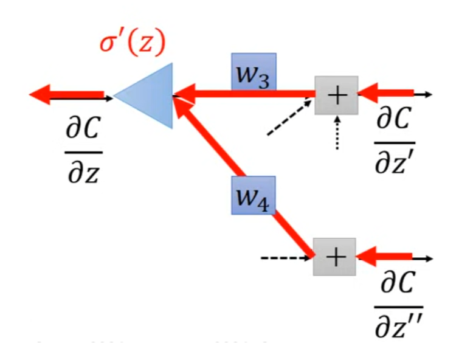
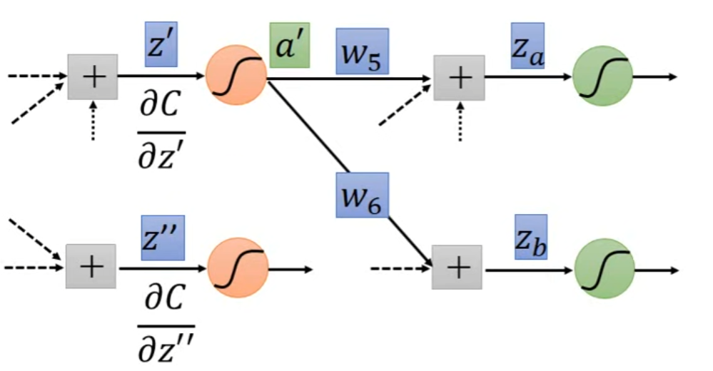
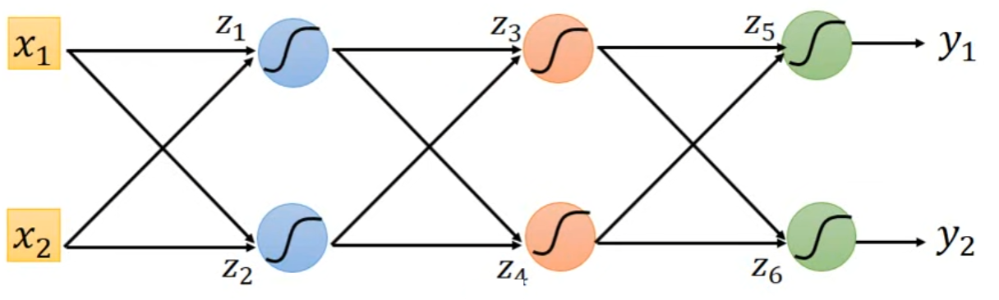
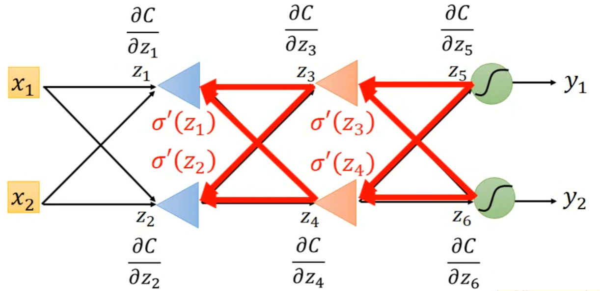
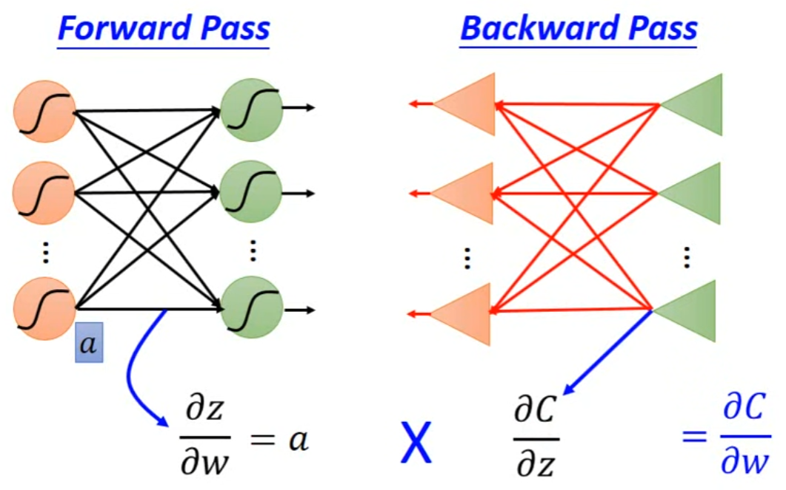

Backpropagation是一种快速计算gradient的方法。
前置知识——Chain Rule
- $y=g(x),z=h(y)$，则$\frac{dz}{dx}=\frac{dz}{dy}\frac{dy}{dx}$
- $x=g(s),y=h(s),z=k(x,y)$，则$\frac{dz}{ds}=\frac{\partial z}{\partial x}\frac{dx}{ds}+\frac{\partial z}{\partial y}\frac{dy}{ds}$
Backpropagation
首先假设有下图这样的Model：

那么对于损失函数$L$，有：
对于$L$的gradient，有：
以下图neuron为例：

根据Chain Rule，$\frac{\partial C}{\partial w}=\frac{\partial z}{\partial w}\frac{\partial C}{\partial z}$，因此需要计算的就是两部分：$\frac{\partial z}{\partial w}$和$\frac{\partial C}{\partial z}$，有如下定义：
- Forward Pass：Compute $\frac{\partial z}{\partial w}$for all parameters
- Back Pass：Compute $\frac{\partial C}{\partial z}$ for all activation functions inputs $z$
Forward Pass
计算$\frac{\partial z}{\partial w}$非常容易，根据上图neuron所示，$\frac{\partial z}{\partial w_1}$即是$w_1$的系数即$x_1$，$\frac{\partial z}{\partial w_2}$即是$w_2$的系数即$x_2$。
对于更多的hidden Layer也是如此：

如图所示，由于$\frac{\partial z}{\partial w}$是从Input Layer开始逐层前向计算的，因此这个过程就叫做Forward Pass。
Back Pass
考虑如下Model：

有$\frac{\partial C}{\partial z}=\frac{\partial a}{\partial z}\frac{\partial C}{\partial a}$，其中$\frac{\partial a}{\partial z}$容易求得，即$\sigma^{\prime}(z)$。
而$\frac{\partial C}{\partial a}=\frac{\partial z^{\prime}}{\partial a}\frac{\partial C}{\partial z^{\prime}}+\frac{\partial z^{\prime\prime}}{\partial a}\frac{\partial C}{\partial z^{\prime\prime}}$，其中$\frac{\partial z^{\prime}}{\partial a}$和$\frac{\partial z^{\prime\prime}}{\partial a}$容易求得，分别为$w_3、w_4$，我们假设$\frac{\partial C}{\partial z^{\prime}}$和$\frac{\partial C}{\partial z^{\prime\prime}}$已知，那么得到最终结果：
我们可以将其用一个neuron表示：

其中，由于$z$是一个在Forward Pass过程中已经被计算出的确定的值，因此$\sigma’(z)$是一个常数。因此，最终的问题归结为$\frac{\partial C}{\partial z^{\prime}}$和$\frac{\partial C}{\partial z^{\prime\prime}}$如何计算。这里分两种情况来进行讨论：
- 如果$z’$和$z’’$所在的layer是Output Layer，那么有：其中各个部分均容易求得；
- 如果$z’$和$z’’$所在的layer不是Output Layer，如下所示：

那么对于$\frac{\partial C}{\partial z^{\prime}}$，有：
到这里我们就会发现，计算的方法会形成一个递归，直到我们计算到Output Layer。
举个例子：假设有如下Model

要计算$\frac{\partial C}{\partial z_1}、\frac{\partial C}{\partial z_2}$，就要首先计算$\frac{\partial C}{\partial z_3}、\frac{\partial C}{\partial z_4}$；要得到$\frac{\partial C}{\partial z_3}、\frac{\partial C}{\partial z_4}$，就要首先计算$\frac{\partial C}{\partial z_5}、\frac{\partial C}{\partial z_6}$。因此，我们的计算顺序为：
我们用下图直观地表示这一过程：

可以发现，这是一个从Output Layer开始反向逐层计算的过程，因此叫做Back Pass。
总结
用一张图来表示整个Backpropagation的过程
